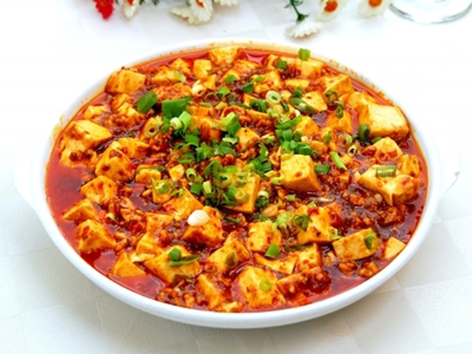

Most Popular Chinese Dishes
Most Popular Chinese Dishes would like to introduce the most Famous Chinese food for you. Some of them are
renowned for the bright color and tender taste, some of them are popular among spicy fanatics and still some of
them, focusing on the original but well-mixed taste…Come with us and start this eye-ball-feast.
Sweet and Sour Pork
Sweet and Sour Pork is a very common but popular dish in China and even may be found all over the world. With
creative design, it has well-mixed two totally different flavors - Sweet and Sour. The history of this dish can be traced
back to 18th century that raised in Candon area.
The dish consists of fried pork in bite sized pieces and the subsequently stir-fried in a more customized version of
sweet and sour sauce that made of sugar, ketchup, white vinegar, and soy sauce. The additional ingredients includes
pineapple dices, green pepper and onion pieces.
Dumpling
Dumpling, Chinese meat ravioli or Jiaozi in Chinese, is a food that can be made and cooked in many different
ways. They are small lumps of dough, and you can eat them as staple food or snack.
The history of Dumpling can be dated back some 1,800 years ago. And it is a very popular food in northern China.
Customarily, people of this area will prepare and eat dumplings at the Spring Festival and Winter Solstice.
Dumplings may be sweet or spicy. It depends on what kind of ingredient and sauce you choose.
Ma Po Tofu
Ma Po Tofu or Ma Po’s Bean Curd, is a very typical and famous spicy dish in Sichuan Cuisine and is very popular
among people in Chengdu. The main ingredient of this dish is tender bean curd that set in a spicy and bean-based
sauce, usually an oily and bright red suspension, and often cooked with minced meat, usually pork or beef.
It is said that the dish was created by a pockmarked but ingenious woman, whose name was Ma Po. “Ma” stands for
"mazi" which means a person disfigured by pockmarks or leprosy.

Delicious dishes at...